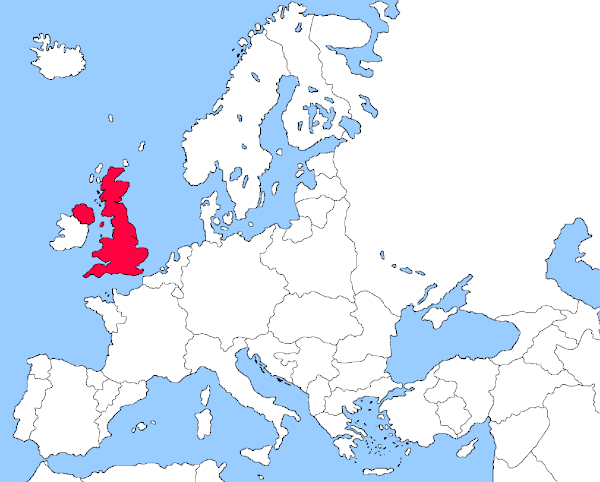
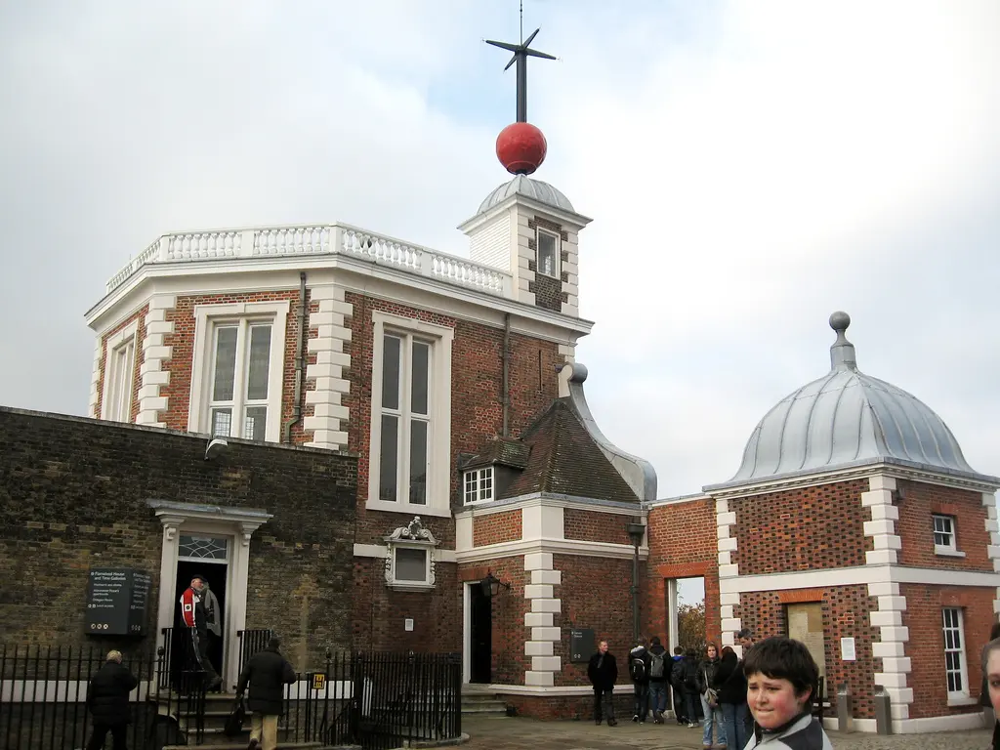
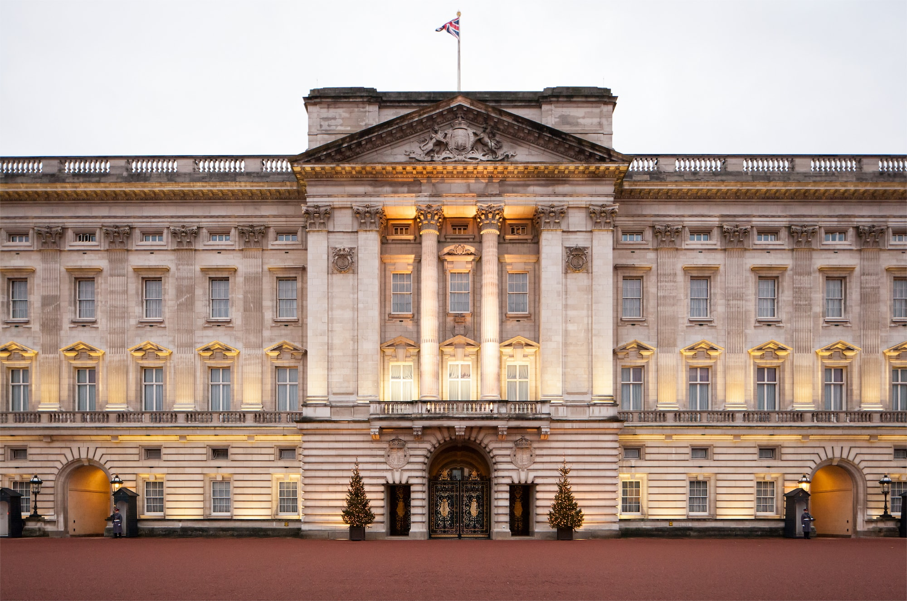
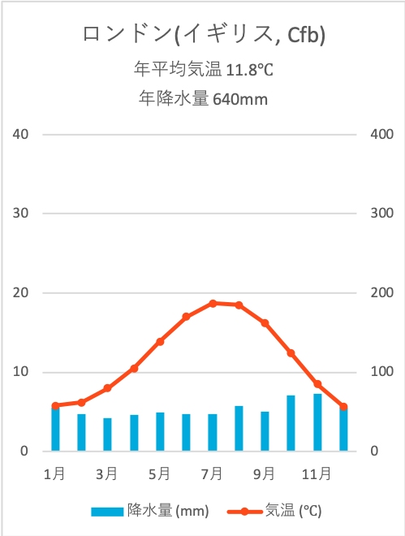
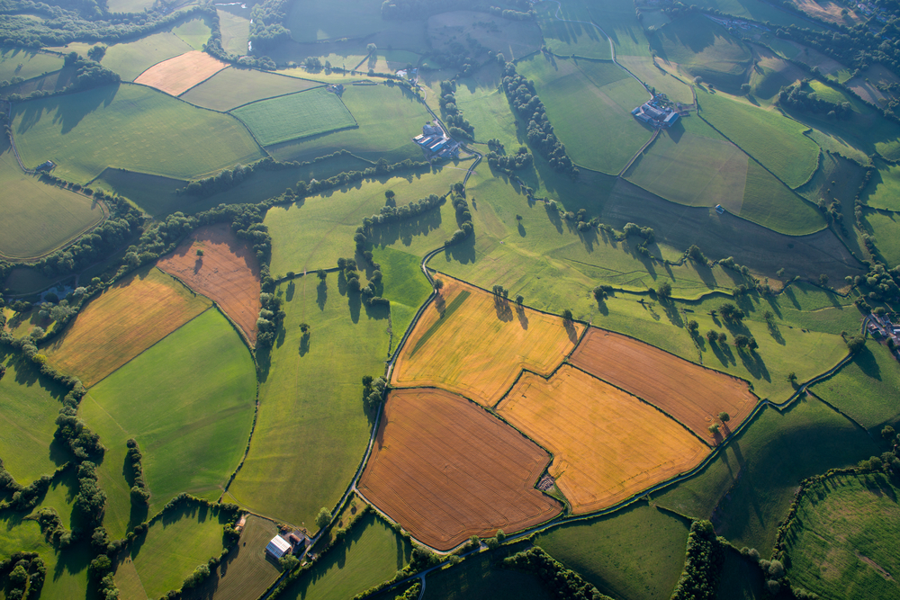
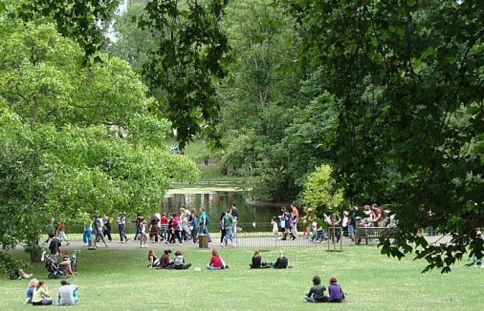
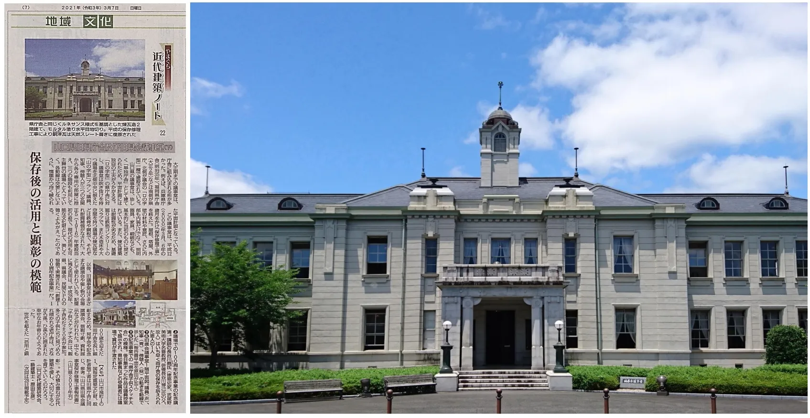
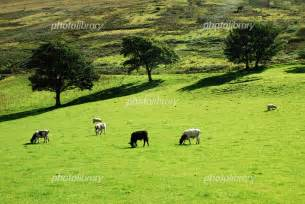
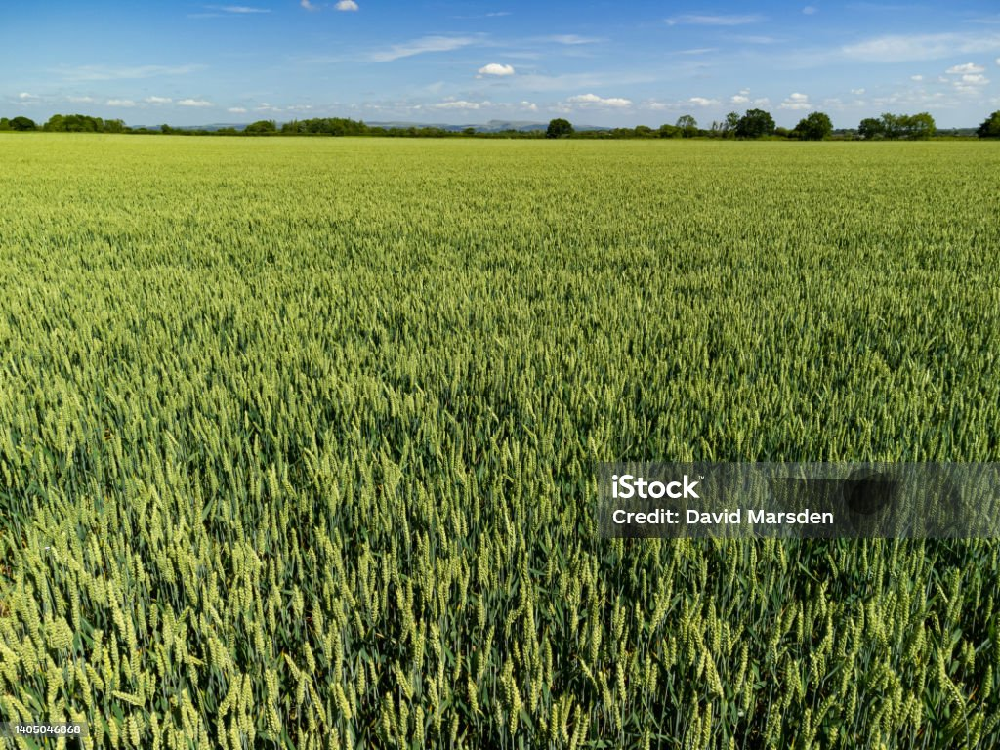

ヨーロッパ地方の国。北大西洋と北海に挟まれています。また、アイルランドと約500kmにわたる国境があります。国名の由来はアングル人の国を意味するイングランドのポルトガル語読み「イングレス」の日本語訛りです
イギリスは、本初子午線が通ることで有名です。世界遺産であるグリニッジ天文台の位置にちょうど通ります。グリニッジ天文台が経度０度である理由は、経度０度の場所を決める話し合いで、当時世界トップクラスの力を持っている国で、立派な天文台を持っていたからです
他にもイギリスには３４件の世界遺産があります。特に「バッキンガム宮殿」と「ビッグ・ベン」は外せません

偏西風と暖流の北大西洋海流の影響で、高緯度なのにも関わら日本と同じ温帯に属しているのも大きな特徴です
現在、国土の8割は農業と牧畜に利用されています。高緯度だけど温暖な気候なので農業が盛んで、特に酪農が代表的です
農業以外の面では、曇りがちな日が多いので、天気の良い休日になれば自然に親しむ姿が見られ、公園に出かける姿が見られます
イギリスは、多くの国が政治、技術等を手本にしている国です。民主政治の母国と呼ばれることもあります。
先述した通り、国土の8割を占める農地と牧場があることです。
 イギリスは、国民総所得の0.7%を世界への援助に充てている、と強調している